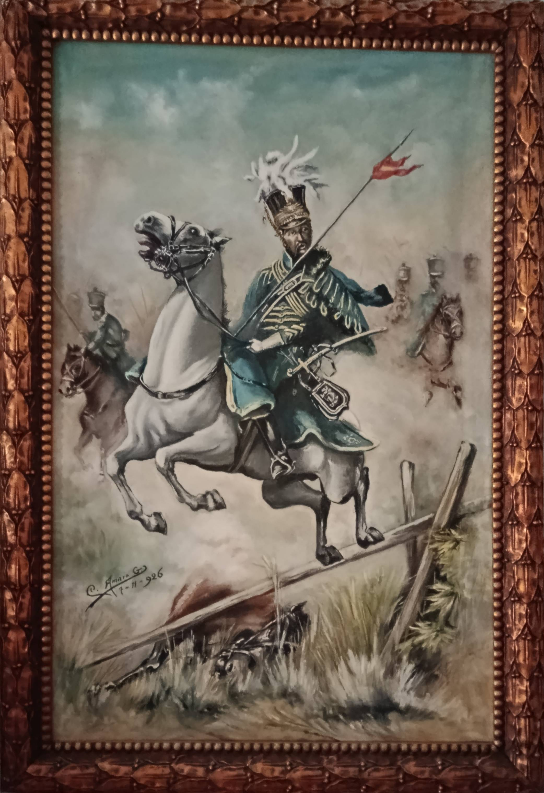
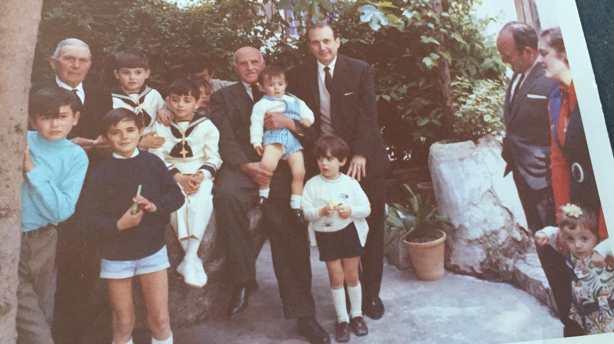

Álbum de Fotos Históricas
Una colección de recuerdos fotográficos de la vida y trayectoria de mi abuelo Camilo.
Esta web es un espacio dedicado a recordar y poner en valor la figura de mi abuelo, Don Camilo Amaro García, entrañable farmacéutico que durante décadas estuvo al frente de la botica de la calle Santa Ana en Huelma. Intelectual, procurador, juez de paz y un apasionado de la historia local, dejó una profunda huella en nuestro pueblo. El objetivo de este proyecto familiar es reunir y compartir todo su legado cultural y recuerdos:

Una colección de recuerdos fotográficos de la vida y trayectoria de mi abuelo Camilo.

Galería digital con los cuadros y óleos pintados por él, recopilados para su conservación.
Artículos, recortes de prensa antiguos y curiosidades como el letrero original de la farmacia de mi abuelo.

Historias entrañables y recuerdos narrados directamente desde sus propias entrevistas.